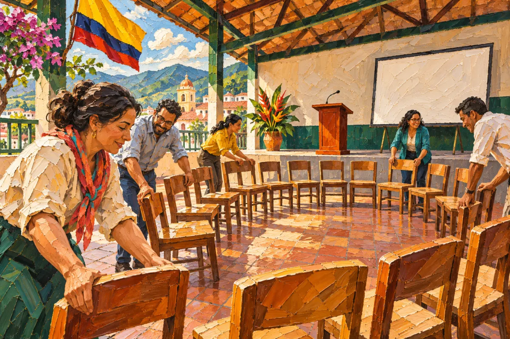
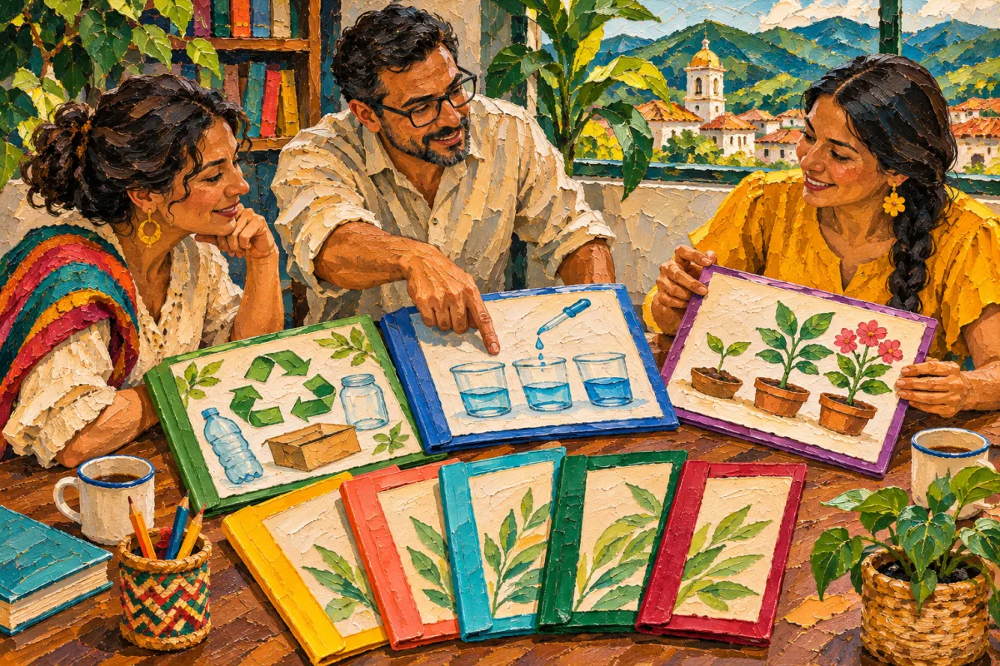

EPA y PEPA
Evento anual de proyectos pedagógicos, Congreso Pedagógico y reconocimiento anual a los proyectos innovadores.
Más en EPA y PEPA

ConvocatoriaPróximaForo Municipal de EPAsForo para socializar las experiencias pedagógicas (EPA) de los docentes de la subdirectiva, vinculado a la revista Voces que Transforman.2026 · Toda la subdirectiva
EPAOcho EPAs del Norte del Valle para el 3.er Congreso Pedagógico NacionalEl CEID Cartago curó 8 experiencias pedagógicas del Norte del Valle para el 3.er Congreso Pedagógico Nacional; FECODE seleccionó 3 a nivel nacional.2025 · Toda la subdirectiva